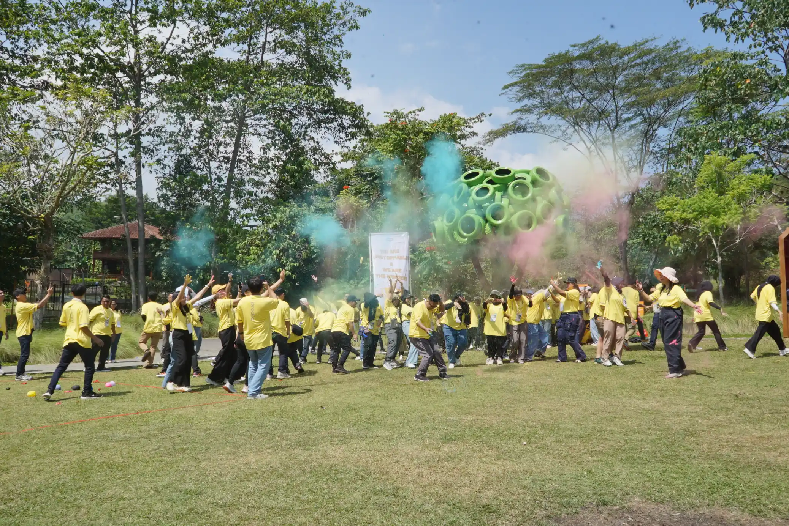

Event
Kolaborasi Danendra Tour and Travel dengan Gunawan Satyakusuma dalam Insurance Partners Gathering Prodia 2026

Corporate gathering menjadi salah satu strategi perusahaan untuk mempererat hubungan dengan para mitra sekaligus membangun semangat kolaborasi. Hal tersebut terlihat dalam Insurance Partners Gathering Prodia 2026 yang diselenggarakan pada 22 Juli 2026 dengan mengusung tema "Stronger Together: Building Trust, Growing Together".
Kesuksesan kegiatan ini tidak hanya ditentukan oleh susunan acara yang menarik, tetapi juga oleh sinergi berbagai pihak yang terlibat. Salah satu kolaborasi yang menarik perhatian adalah kerja sama antara Danendra Tour and Travel sebagai penyelenggara perjalanan dan Gunawan Satyakusuma Jasa Dokumentasi Bandung sebagai tim dokumentasi visual profesional.
Perjalanan Corporate Gathering yang Terorganisir
Rangkaian kegiatan dimulai sejak pagi hari dari Kantor Prodia Kramat Raya menuju JSI Resort. Selama perjalanan peserta menikmati berbagai aktivitas interaktif seperti karaoke, kuis, hingga pembagian snack yang dipandu oleh tour leader.
Setibanya di lokasi, peserta mengikuti coffee break, outbound, fun game, makan siang bersama, kemudian melanjutkan perjalanan menuju kawasan Go Luge dan Dairyland Chimory sebelum kembali ke Jakarta pada sore hari.
Peran Danendra Tour and Travel
Sebagai penyedia layanan perjalanan, Danendra Tour and Travel memastikan seluruh agenda berlangsung sesuai jadwal. Mulai dari pengaturan transportasi, koordinasi peserta, hingga kenyamanan selama perjalanan menjadi bagian penting yang mendukung kelancaran acara.
Manajemen perjalanan yang baik memungkinkan peserta menikmati setiap aktivitas tanpa harus memikirkan aspek operasional, sehingga fokus utama tetap pada membangun hubungan antar mitra bisnis.
Dokumentasi Visual oleh Gunawan Satyakusuma
Di balik setiap corporate gathering yang sukses terdapat dokumentasi visual yang mampu merekam nilai dan cerita di balik setiap aktivitas. Dalam acara ini, Gunawan Satyakusuma Jasa Dokumentasi Bandung mengabadikan berbagai momen mulai dari keberangkatan peserta, perjalanan menuju lokasi, outbound, sesi kebersamaan, aktivitas Go Luge, hingga dokumentasi penutupan acara.
Pendekatan dokumentasi dilakukan secara natural sehingga menghasilkan foto dan video yang tidak hanya menarik secara visual, tetapi juga mampu menggambarkan suasana kolaboratif yang menjadi tujuan utama kegiatan.
Lebih dari Sekadar Dokumentasi
Bagi perusahaan, dokumentasi bukan hanya menjadi arsip kegiatan. Foto dan video berkualitas dapat dimanfaatkan sebagai materi publikasi perusahaan, laporan tahunan, media sosial, presentasi bisnis, hingga membangun citra profesional perusahaan kepada publik.
Dokumentasi yang tersusun dengan baik juga menjadi aset digital yang memiliki nilai jangka panjang karena mampu merekam perjalanan perusahaan dalam membangun hubungan dengan mitra bisnis.
Kolaborasi yang Memberikan Nilai Tambah
Kolaborasi antara Danendra Tour and Travel dan Gunawan Satyakusuma menunjukkan bahwa sebuah corporate gathering membutuhkan lebih dari sekadar lokasi yang menarik. Pengelolaan perjalanan yang profesional dipadukan dengan dokumentasi visual berkualitas mampu menghasilkan pengalaman yang berkesan sekaligus arsip digital yang bernilai.
Insurance Partners Gathering Prodia 2026 menjadi contoh bagaimana sinergi antara penyelenggara perjalanan dan dokumentasi profesional dapat mendukung keberhasilan sebuah event perusahaan, mulai dari sisi operasional hingga komunikasi visual setelah acara selesai.
Baca juga:
- Dokumentasi Corporate Event Profesional di Bandung
- Kolaborasi Danendra Tour and Travel & Gunawan Satyakusuma di Fun Bike PLN 2026
- Gunawan Satyakusuma | Jasa Dokumentasi Foto & Video Profesional Bandung
- Ekosistem Industri Kreatif Bandung
- Perkembangan UMKM dan Komunitas Bisnis di Bandung
Kolaborasi yang baik menghasilkan pengalaman yang berkesan, sedangkan dokumentasi profesional memastikan setiap momen tersebut tetap hidup sebagai bagian dari perjalanan dan reputasi perusahaan di masa depan.